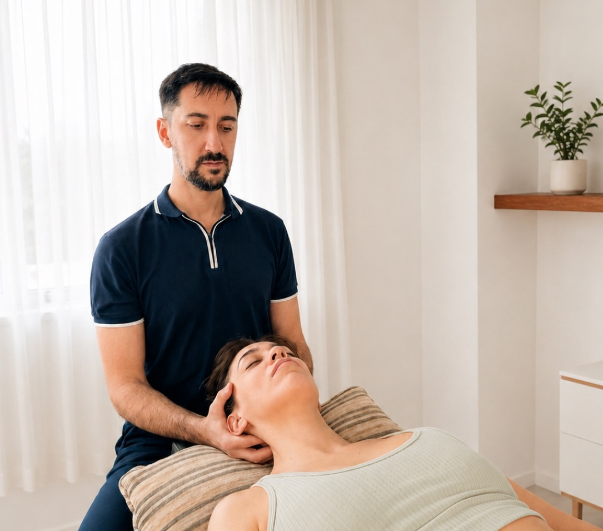
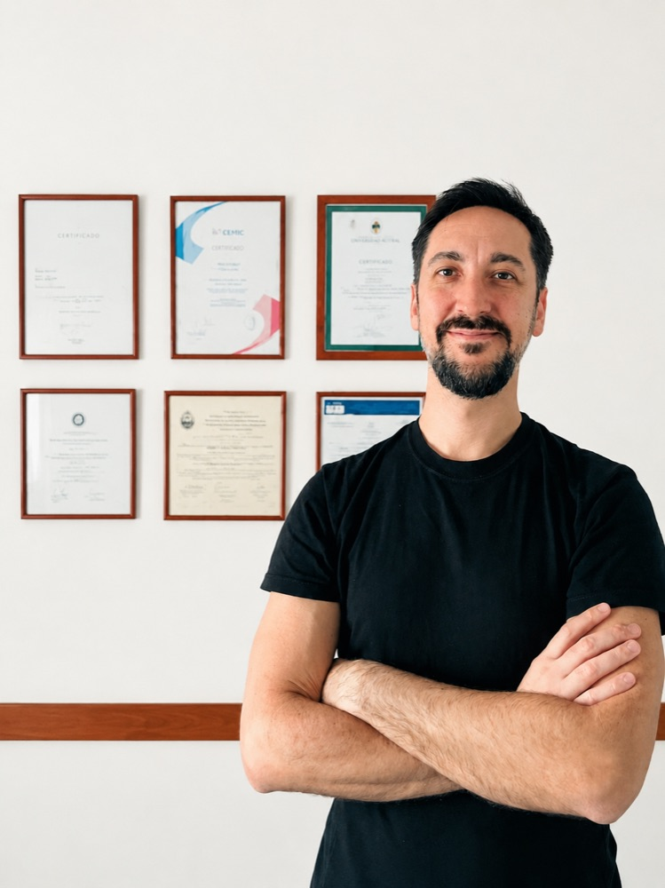

"Excelente profesional. Me ayudó muchísimo con mis dolores cervicales y de cadera, se toma el tiempo de escucharte, está siempre atento a que te sientas cómoda y te guía con ejercicios para seguir el tratamiento en casa. Recomendadísimo."
Atención personalizada - Consultorio en Caballito
Moverte sin dolor
Moverte sin dolor
es posible.
Kinesiología · Osteopatía · RPG Método Tres Escuadras Brindamos un abordaje integral y personalizado para aliviar el dolor, recuperar la movilidad y mejorar tu calidad de vida.

Encontrá tu tratamiento
¿Qué te está molestando?
Seleccioná tu síntoma y encontrá el tratamiento indicado para vos.
Dolor lumbar
Dolor cervical
Dolor de espalda
Ciática
Hernia de disco
Dolor de hombro
Dolor de rodilla
Dolor de cadera
Fascitis plantar
Migraña
Dolor de cabeza
Bruxismo
Dolor de mandíbula
Mareos
Mala postura
Dolor postural
Lesión deportiva
Hormigueo
Adormecimiento
Dolor articular
Dolor menstrual
Cicatrices
Dolor pélvico
Molestias del embarazo
Abordaje Terapéutico
Nuestro método
Creemos en un modelo de atención centrado en la educación y el autocuidado. Por eso, cada tratamiento incluye herramientas prácticas para que el paciente comprenda su problema, participe activamente de su recuperación y desarrolle estrategias que le permitan mantener los resultados obtenidos más allá de las sesiones.
Evaluación integral
Analizamos en profundidad tu historia clínica, postura y movimiento para identificar el origen real del problema, no solo el síntoma.
Tratamiento manual especializado
Aplicamos técnicas osteopáticas, craneosacrales y de RPG adaptadas específicamente a tu caso y tus objetivos.
Ejercicio terapéutico personalizado
Diseñamos un plan de ejercicios a medida para que puedas seguir avanzando entre sesiones y fortalecer los resultados.
Educación y prevención de recaídas
Te damos las herramientas para entender tu cuerpo, corregir hábitos y sostener los cambios más allá del consultorio.

17+años de trayectoria
El profesional
Compromiso con tu salud
Soy el Lic. Guido Biegun, y mi misión es acompañar a las personas en la recuperación de su salud mediante un enfoque que une precisión clínica con calidez humana. Entiendo el cuerpo como una unidad donde cada síntoma revela una historia de desequilibrio que podemos sanar.
- Cert. Osteopatía
- Formado en Neurorehabilitación
- Espec. en Reeducación Postural Global (RPG) - Método Tres Escuadras
-
Lic. en Kinesiología y Fisiatría
Mat. Nac. Nº 10110
Preguntas frecuentes
Todo lo que necesitás saber
¿Cuánto dura la primera consulta?
La primera sesión dura 60 minutos. Incluye una evaluación completa de tu historia clínica, postura y movimiento antes de comenzar el tratamiento.
¿Necesito orden médica para consultar?
No. Podés reservar tu turno directamente sin necesidad de derivación médica.
¿Atiende obras sociales o prepaga?
Las consultas son particulares. Podés consultar por los aranceles al momento de reservar tu turno.
Hay obras sociales y/o prepagas que realizan reintegros.
¿Cuántas sesiones voy a necesitar?
Depende de cada caso. En la primera consulta se evalúa la situación y se define un plan personalizado con una estimación de sesiones.
¿La osteopatía duele?
Las técnicas utilizadas son manuales y generalmente indoloras. En algunos casos puede haber una leve sensación de presión o trabajo en la zona tratada.
¿Se puede hacer tratamiento durante el embarazo?
Sí. Se utilizan técnicas específicas y adaptadas para cada etapa del embarazo, con especial atención a la comodidad y seguridad de la paciente.
¿Necesito llevar estudios previos?
Si contás con radiografías, resonancias, ecografías, informes médicos u otros estudios relacionados con tu consulta, es recomendable traerlos. No son indispensables para solicitar un turno.
¿Qué ropa conviene usar para la consulta?
Te recomendamos asistir con ropa cómoda que permita realizar la evaluación y el tratamiento con libertad de movimiento. En el caso de los hombres es preferible utilizar short. En el caso de las mujeres, es preferible utilizar corpiño tradicional o top con breteles simples, evitando, en lo posible, los corpiños deportivos con breteles cruzados en la espalda, ya que pueden dificultar el acceso y la evaluación de algunas estructuras de la columna, hombros y región dorsal. La comodidad y privacidad del paciente se respetan en todo momento durante la consulta.
¿Tenés alguna otra duda?
Consultanos por WhatsApp
Experiencias
Lo que dicen nuestros pacientes
"Hablar de Guido es hablar de excelencia en profesionalismo y en personalidad. Su atención es excelente en todo sentido. Lo que para nosotros es muy destacable es su trato con personas mayores, pues generalmente a los profesionales les cuesta acercarse. Mil gracias Guido por lograr que mi marido que jamás hizo ejercicios ahora haya encontrado la forma de calmar sus dolores."
"Excelente profesional. Muy atento, explica todo con claridad y el tratamiento fue muy efectivo. Salí con una mejora importante desde la primera sesión. Muy recomendable."
¿Listo para sentirte mejor?
Agendá tu primera consulta hoy mismo y comenzá el camino hacia una vida sin limitaciones ni dolor. Atendemos en Caballito y a domicilio.
Reservar por WhatsApp
Respuesta inmediata de lunes a viernes
Ubicación
Emilio Mitre 48 6°C
Caballito, CABA
Horarios
Lun a Vie: 09 a 18hs
guidobiegun201@gmail.com